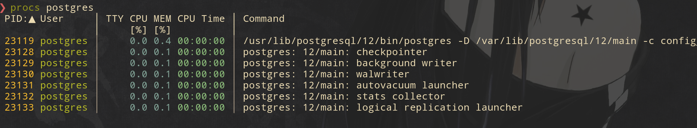

Postgres, I think I got it
My DBMS of choice is Postgres. I have been using it for the last three years and every time I discover some internal parts which are quite amazing and unique foe Postgres(jsonb index support,materialized views,prepared transactions you name it ). This blog post is some sort of a cheetsheet on How Postgres works internally Without going too deep into implementation details. If you wanna go deeper then search for highlighted keywords in the official Postgres documentation . Everything I will cover here is related to Postgres 12. Also I am not a Postgres developer and everything I will describe here is based on my understanding gained from Blog posts and documentation. I can easily make mistakes so don't hesitate to mention it so I can improve this post. Okay , Let's start.
Where is my data Dude ?
Let's start with data. Where Postgres stores databases
and
tables? If you doesn't set an environmental variable
$PGDATA then your Database Cluster is stored in
/var/lib/postgresql/12/main. Cluster is a
collection of databases managed by Postgres(cluster in the
context of Postges is not a cluster of separate servers)
. Single database is a collection of database
objects(tables,indexes,views...). It's stored under the
base
directory
If you go inside of the base directory you will see a list
of
numbered sub folders. Those
are database object ids(
OIDS
).
Every folder here represents a database. Let's say I have a
database called
test
. If I run this query using
psql
, I can get an
associated OID of this database.
SELECT datname, oid FROM pg_database WHERE datname =
'test';
In my case this number was
16384
. Check if
you have a folder with this number inside the
base
directory(in your case this number
will be different). Now let's
cd
into folder with this number and you will see a bunch of
files. Some of them have suffixes _fsm,_vm. We
will talk about those files later. Other files(without
suffixes) are labeled using numbers. Every file without a
suffix is
a separate table. Let's check it.
In my
test
database I have a table called
users
. Let's see which file is associated with this table.
\connect test;
SELECT relfilenode FROM pg_class WHERE
relname = 'users';
In my case it's
17178
. So the file with this number is my
users
table. The data in this file is stored as a list of 8Kb long
pages. Every page contains 3 main parts
- List of tuples - actual data in table rows .
- Line pointers - each pointer contains a file offset to the start of the tuples.
- Headers - General information about the page to be used by WAL. Also it contains ID of transaction that created or deleted this tuple(it's used by MVCC)

For me it was confusing, what if a table stores a huge BLOB of data in the row ,how would it fit into 8 Kb Page. The answer is TOAST . When value is big enough and data type has a variable length(such as a length of a string) then the actual column is stored out of the tuple, and tuple has a pointer to this value. I really recommend you to read this presentation about TOAST HERE.
Multiversion concurrency control
Now Let's talk about how different transactions read these
pages
concurrently.
Firstly , there are could be multiple versions
of the same row at the same point of time. How could we
distinguish
these versions from each other ? Every row has two hidden
fields which indicate a creation time(xmin) and deletion
time(xmax). When row is created it's xmin is set to
transaction id of the transaction that performed the INSERT,
when row is deleted it's xmax is set to transaction ID that
performed DELETE or UPDATE. Yes, technically when
transaction performs UPDATE then row's xmax is set to
transaction ID and new row is created whose xmin is set to
transaction ID. Transaction ID? Every database transaction
has a unique
identifier which is just a 32 byte integer which is
incremented every time a new transaction is created.
Secondly,every transaction has a state such as
committed,aborted,or in progress. These states are stored in
PGDATA/pg_xact
file. Two bites are allocated for every transaction -
committed or aborted.
Finally let's talk about visibility. When transaction tries
to read a row it has to check the following conditions.
- Read xmin of the row and check from pg_xact file if transaction with this xmin id was completed
- If transaction was completed was it committed if yes then this row is visible(technically it also depends on isolation level ,as an example repeatable read won't see a row with committed xmin if xmin is bigger than current transaction's ID,while read committed will )
- If transaction with row's xmin is aborted then this row is not visible
So we have multiple versions of the same row and at some point of time some of those versions won't be valid, however they still allocate a physical space . In oder to clean up this space, the process called VACUUM is used.
VACUUM
So what Vacuum does? It vacuums away dead tuples and references from indexes to these tuples. Vacuum doesn't clean up the physical space. Instead , it stores dead tuple locations in Free Space Map or FSM(remember I told you about files with suffixes, the ones with _fsm suffix is Free Space Map). When new tuple is gonna be inserted it will override the physical space occupied by dead tuple using FSM(let's say you have dead tuples in the end of the table file, in this case these space will be cleaned and returned to Operating system check out this research to understand how it works HERE). However , scanning whole table is expensive that is why another data structure is used to speed up this process called Visibility Map or VM (remember files with _vm suffix). Visibility map works in the same way as pg_xact. It stores boolean bite for every page in the table. This bite indicate if this page has dead tuples. If it doesn't then Vacuum skips this page. Also Vacuum cleans references to dead tuples from indexes. However, and this is important, it doesn't clean up index space. So if you have a table with a lot of deletes or updates, it's better to recreate indexes cause index still occupies physical space with a references to dead tuples even though they won't be used during the index scan. Lastly , Vacuum does one really important thing called freezing. In order to understand what it means we have to return to transaction ID. As I said transaction ID is 32 byte number, what's gonna happen when there is now available number in this range for new transaction(2^32 is reached) ? In this case transaction wrap around will happen and ID counter will start from zero again. It's a little bit confusing because new transaction with ID 1 will think that transaction with id 2^32 is in the future. It will break visibility rules and in order to avoid it Vacuum does a freezing. Vacuum finds pretty old tuples which are visible to all transactions and mark them as frizzed which means it doesn't meter which xmax this row has , it will be visible to all transactions. Freezing is the main reason why long transactions is a bad idea. Before freezing old transactions Vacuum has to make sure there is no transaction that work with these pages. If you open a transaction and forgot to finish it, Vacuum will wait forever so don't forget to set up transaction max age time in your pg_conf file(by default transactions don't have a time out limit)
WAL or Durability
And the last thing I want to mention is WAL or Write Ahead
Log. First of all working with disk directly is really
expensive it terms of time. RAM and CPU caches are much
faster , that is why , When you execute queries the values
are read or written to data structure called Buffers which
are stored in RAM. Every insert is firstly stored in this
buffers and following updated will change Buffer's value.
However in order to survive server crashes , Postgres can't
blindly
store everything in RAM. Therefore, along with data changes
,the log with these changes is maintained. When we update
the value in Buffer Cache we also insert a new record to
this log. This log is append only so it's much faster than
Random disk write. In case of failure , Postgres can
replay WAL in order to store consistent data in the disk.
WAL is stored on disk as files in the $PGDATA/pg_wal
directory , each file is 16Mb and if it's full a new file
will be created.
Don't worry , commits are also WAL logged so aborted
transaction won't be replayed.
Recovery
During recovery , the process called postmaster will read all
rows from WAL files and execute them one by one . However ,
let's say we have 10 WAL files each 16 Mb long, the
recovering process will be really long so we need a way to
speed up recovery and this way is called CHECKPOINTS
During Checkpoints, Postgres should flush the data from
buffers to disk . When all dirty buffers(dirty means buffers
that store inserts and updates) are flushed to disk the
checkpoint is considered to be completed. In this case when
postmaster does a recovery , it skips all WAL rows
created prior to Checkpoint.
The WAL mechanism is really powerful and it's also used
during Postgres Replication. Let's say you have a long
analytical queries that take hours to complete. These
transactions will reduce the speed of other small
transactions. In order to avoid it , the easiest way is just
run small transactions against main Postgres
instance(master), and setup another postgres
instance(slave), then stream WAL changes from master to
slave so slave will have an up to date information and can
be used in order to performer heavyweight analytical
queries.
Processes
Now when we know a little bit about processes let's see how it looks in reality
There are 6 processes that run along with main Postgres process
- checkpointer - periodically runs checkpoints to save changes from dirty pages to disk
- background writer - I didn't cover it because it works in the same way as checkpointer, flushes dirty pages to disk ,check documentations to understand why Postgres uses two processes to do it
- walwriter - writes data to append only log files
- autovacuum - periodically runs vacuum process
- statscollector - collect performance and usage statistics such as IO performance and usage of every table in database
- logical replication launcher - the process that pushes logical changes from master to listeners,I didn't cover it because replication topic is big enough for a separate blog
Conclusion
Postgres is a wonderful database which has a huge variety of
use cases. It can be used as a NoSQL database with an
excellent jsonb support. Also you can use it as a
TimeSeries(checkout TimeScaleDb)
database. Spend some time and checkout Postgres
Documentation because it's a great example how documentation
should be written, I have never seen such a great
explanation of complex internals as in Postgres
Documentation. I wanna thank Egor Rogov
for his excellent blog series about Postgres in Habr(also
he answered some of my questions related to Transaction
Isolation so I'm really grateful he spent time
explaining those concepts). Also I highly recommend you to
take a look at this blog series about Postgres Internal
by Hironobu SUZUKI that helped me a lot to understand
internal data structures used be Postgres.
Thanks for
your
time !